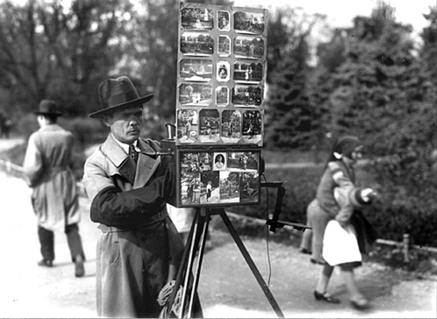

Iubitorii de scandal, mai mult decât de senzațional chiar, pot să fie mulțumiți. Există - sau se încearcă stăruitor a se crește - un nou „scandal bisericesc”.
Cred că fenomenul este specific așezării publice românești. Nu cunosc, în orice caz, întâmplări analoage aiurea. Poate pentru că Biserica noastră ar fi mai rea? Pentru că chiriarhii noștri ar fi mai plecați păcatului sau „opinia publică” mai puritană? Nu.
Ne aducem doar aminte de blestemățiile pe cari le povestește istoria religioasă despre diferiții capi de Biserici; cunoaștem și noi, în zilele noastre, proeminente personalități ecleziastice de prin alte părți, a căror viață privată nu din cele mai pure. Și totuși, de scandaluri bisericești nu se aude. De ce?
Pentru că nicăieri, ca la noi, nu se amestecă politica în Biserică. Treceți, vă rog, în revistă tulburările prin cari a trecut Biserica noastră în ultimul sfert de veac. Care este chiriarhul atacat numai pentru „păcatele” lui? Ce proces a fost deschis, care să nu aibă un substrat politic? În ce împrejurare numai dragostei de Biserică a provocat la acțiune pe acuzatori?
Există în viața noastră religioasă publică o categorie de oameni cărora nu poți recunoaște nici o meserie precisă. Ei apar însă - sau, în orice caz, îi poți identifica ușor - în orice scandal bisericesc. Asta e meseria lor: aduna acte constituie dosare, fără nici un scop precis, ca pe un eventual articol de vânzare. Oricui. Căci dosarul poate fi tot așa de bine cumpărat de „victimă” ca și de adversarii ei.
La acești oameni, ca la un izvor sigur de informație, se adresează cine are nevoie de o campanie. Dar, vedeți, fabricarea și adunarea de acte împotriva episcopilor este, într-un fel..., o industrie. Iar ca industrie ea este supusă tuturor progreselor tehnice; deci, și standardizării. Dosarele acestea au început să aibă de la o vreme aceeași înfățișare; se poate, de pildă, ușor stabili că acuzații ridicate astăzi împotriva P.S. Ghenadie al Buzăului sunt la fel cu cele formulate pe vremuri în contra Î. P. S. Miron Cristea.
Biserica poate fi rentabilă. Dar oamenii de conștiință ar trebui să intervină pentru a se curma cu sistemul. Și poate că chiar actualul scandal, în care s-a pus atâta patimă și incorectitudine, în care acuzatorii au folosit acte ca să-și creeze elemente de acuzare, ar trebui să fie prilej pentru o asemenea acțiune.
Știu că e greu; e, totuși, absolut necesar să se isprăvească cu amestecul laicilor și al politicienilor în Biserică. Ce rost au interpelările parlamentarilor în chestiuni ecleziastice? Să se facă ordine sau dreptate? Dar nu există un Sinod al Bisericii Ortodoxe? Și atunci, cu ce drept se încearcă a se sustrage „acuzatul” judecătorilor lui naturali?
Toți zeloșii „ortodoxiei”, cari s-au simțit jigniți de articolele noastre în legătură cu balastul pe care îl reprezintă pentru Biserică „sprijinul” statului, sunt datori să ia poziție față de faptele ce vor fi relatate mai jos, după cum au luat față de amintitele articole.
Iată faptele. În județul Tecuci, un preot, primar al comunei sale, și-a schingiuit un adversar politic în așa hal, încât nenorocitul a sucombat chinurilor. În același județ, un alt preot, tot primar, a culcat la pământ cu trei focuri de revolver pe un consătean, și acesta adversar politic. Martorii spun că focurile au fost trase de la distanță de un metru, în timp ce executatul era ținut pe loc de doi „prieteni politici” ai preotului ucigaș.
Lucrurile au fost povestite în parlament de către deputatul Ion Răducanu; și chiar dacă tribuna Camerei nu ar fi un loc de răspundere, profesorul Răducanu este un om care cunoaște sensul cuvintelor. Asupra exactității faptelor nu poate exista, deci, nici un fel de îndoială. Și nici asupra calificativelor cari au spintecat cupola Camerei: tâlhar, ucigaș, bandit, criminal; toate aplicate - din nenorocire, pe drept cuvânt - unor slujitori ai altarului.
Sigur că nimic din toate aceste nenorociri nu s-ar fi întâmplat, dacă preoții respectivi nu ar fi făcut politică și nu ar fi fost primari. Mai ales. Știm doară că, în mai toate satele noastre unde-și face loc o îndușmănire între preot și o parte a satului, pricina e politica. După cum știm că, din aceeași pricină, în cele mai multe locuri, învățător și preot, ceea ce s-ar numi cărturărimea satului, se războiesc.
Cine e vinovat în toate aceste nenorocite întâmplări? Desigur, episcopul, care nu înțelege să-și țină preoții departe de patimile mărunte - dar, precum se vede, și sângeroase - fatal legate, într-un cerc restrâns, de luptele politice. Fatal; căci ceea ce într-un oraș mare poate rămâne în domeniul principiilor sau în cadrul abstract al partidelor (nu se cunosc oameni politici cari se atacă cu strășnicie aproape insultătoare în public, dar știu să fie în particular prieteni?) se transformă în sat într-o inimiciție de-a dreptul personală.
Deci, vinovat este episcopul; dar nu personal. Ci prin sistem. Căci, în Biserica noastră autocefală, dar trăind ca o ciupercă la umbra statului politic și politicianizant, chiar desemnările de episcopi se fac tot după indicațiuni politice. Vreți să numărăm înaltele fețe bisericești cari ocupă scaunele de păstorire în virtutea unor merite duhovnicești? La ce bun să mai atacăm persoane, atunci când ele nu sunt decât roade ale unui sistem? Se poate, omenește vorbind, opune chiriarhul pretențiilor oamenilor politici cari îi vor pe preoți instrumente de stăpânire lumească a statului? E o glumă! Mi se pare că nu există Biserică în care să se poată număra ațâți chiriarhi depuși din scaun câți avem noi; și toți din motive și prin mașinații politice.
Statul e politic; și nu e în fapt o abstracție; ci el se confundă, practic, cu oamenii politici cari îl conduc. Iar oamenii politici își cer personal răsplata pentru sprijinul pe care statul îl acordă Bisericii. Ei contează pe preot, ca pe un element dator să îi ajute politicește. Așa se explică faptul că un mare elector, discutând organizarea partidului, cerea ca preotul să facă parte de drept din conducerea politică a statului. Ceea ce, evident, s-a admis; răposatul mare elector fiind un om „de realități”.
Asta e, deci, sistemul. Și iată unde am ajuns cu el: la schingiuire și la crimă. De bună seamă, cazurile se vor lua în cercetare. Nu vom spune că nu se va face nimic. Chiar dacă guvernul va găsi modalitatea unei amnistii pentru a salva „prestigiul politic” al partidului, e greu să credem că Biserica va mai îngădui la altar asemenea bestii. Dar nu e de-ajuns. Procedarea de la caz la caz e un paleativ. Biserica - astăzi autonomă - are îndatoriri mai largi. Sfântul Sinod e adunat în sesiune obicinuită. Nu s-ar putea ridica și această problemă?
Actul de curajoasă hotărâre al P.S. episcop al Orăzii, Roman Ciorogariu, prin care se cere preoților să demisioneze din partidele politice, sub citarea canonului apostolic că nimeni nu poate sluji la doi stăpâni, este - în atmosfera de anarhie și de uitare a sfintelor așezări în care se zbate Biserica noastră - un suprem cordial.
Nu este vorba de eficacitatea actului în sine. Poate că, la urma urmelor, îndreptățirea canonică a pastoralei P.S. Roman nici nu e așa de clară și că e nevoie de o interpretare prin ocol a textelor, pentru ca aplicabilitatea lor să fie reală.
Pe de altă parte, realitatea socială e la noi prea puternică față de cea religioasă, pentru ca porunca episcopului de Oradea să găsească ascultare.
Canoanele? Dar noi am dat texte precise, nu interpretări, după care Î.P.S. Miron a căzut sub afurisanie, pentru că a acceptat să funcționeze ca membru al înaltului Consiliu de Regență! S-a mișcat cineva în țară și în Biserica noastră? Sinodul se adună, Sinodul se risipește fără ca cineva să îndrăznească a-și aduce aminte că mai există și o lege a lui Dumnezeu, față de care e răspunzător. Doar eu, unul singur, nu am deznădăjduit. Și aștept ceasul în care mâna lui Dumnezeu se va lăsa greu asupra înfruntătorilor.
Deci, dară, nu în efectele ei materiale imediate ne bucură pe noi hotărârea P.S. Roman de la Oradea, ci în spiritul ei. Este ca un semn care depășește puterile noastre de acțiune și de înțelegere.
Nu se poate ca P.S. episcop să nu se fi bătut din vreme cu gândul acesta. Nu se poate ca ideea răspunderii pentru năvala pălămidei lumești în grădina lui Dumnezeu, care i-a fost dată în grijă, să nu-i fi frământat gândurile și conștiința.
E un act nepolitic - desigur. Dar tocmai aci îi vedem noi valoarea: în marea întoarcere sufletească, grație căreia un om prea respectat, de grea și înaltă răspundere, depune printr-o asemenea acțiune mărturie pentru primatul spiritualului. Când? Într-o vreme când patriarhul țării acceptă un loc în regență, iar Sinodul bâjbâie în cele mai grele rătăciri.
Părinte Roman, pe răbojul păcatelor noastre, Dumnezeu nu va întârzia să cresteze fapta ta răscumpărătoare. Fii sigur. Și asta e tot ce poți nădăjdui mai mult!
Cuviosul monah Gherasim trece la catolici. Este ultima veste pe care o primesc în legătură cu frământările din Biserica noastră. Înainte de această a doua moarte a lui (căci, intrând în monahie, Gherasim a murit după trup, iar trecând la catolicism, el moare a doua oară, după suflet), înainte de această a doua moarte a lui, deci, cuviosul Gherasim era călugăr în schit, la Durău. Întâmplări a căror orânduire nu a stat în mâna și în puterea lui l-au adus în anii din urmă ca slujitor pe lângă Biserica patriarhală din București. Era un umil rob al treburilor zilnice, dar de bună seamă că, deasupra sufletului lui, nesigur și neancorat în Hristos, stăpânea o minte ageră, în care elementul formal al gândirii sărbătorea orgii de rudimentară, dar implacabilă dialectică. Nenorocirea a căzut pe capul lui năprasnică - există mai grozavă nenorocire pentru un pravoslavnic decât această alunecare spre drumurile Romei? -, năprasnică, pe măsura uscăciunii credinței lui și pe măsura încrederii în rațiunea lui, în buna lui logică.
Pentru că fostul cuvios Gherasim nu a făcut decât să tragă, așa uscat de credință cum era, consecințele dintr-o stare de lucruri care, pe zi ce trece, se înscăunează mai hotărât în Biserica noastră. Ierarhia noastră bisericească se catolicizează în apucături - asta o simțea nefericitul Gherasim, cum o simțim fiecare din noi; și atunci, consecvent și curagios, el a luat-o înainte; trecând într-o ordine de așezări în care toate lucrurile acestea, după care se doresc ierarhii noștri, sunt gata făcute și - din punctul acesta de vedere - bine făcute.
Ultimele întâmplări din Biserica românească îl vor fi împins încă mai mult spre drumul rătăcirii; pentru că niciodată nu s-a dovedit mai precis ca în aceste împrejurări că în sufletul chiriarhilor noștri români hălăduiește duhul papistaș al puterii pentru putere. O întreagă serie de greșeli, care mai de care mai grele, au sfârșit prin a arunca Soborul nostru în afară de Ortodoxie. Am rugat, am protestat. Degeaba. Nu ai dreptul să te ridici împotriva hotărârii Sfântului Sinod. Roma locuta. Roma a zis. Sfântul Sinod a hotărât - plecați-vă noroade.
De la nenorocita schimbare a calendarului, făcută fără nici o pregătire și fără nici o grijă pentru sufletele oamenilor, toată sforțarea Sinodului nostru a fost una singură: să-și salveze prestigiul. Târguri rușinoase s-au încheiat, umilințe groaznice au fost îndurate între patru ochi, vrajbă s-a aruncat între fiii aceleași Biserici, amenințată cu destrămarea; orice! Nimic nu era prea scump dacă „autoritatea” Sinodului putea să rămână în picioare.
Autoritatea? Zic ei! Căci, în fapt, un Sinod care se dovedește a fi ignorant până și în cele mai elementare adevăruri pravoslavnice, ale cărui cărți pastorale sunt sfârtecate până la desfigurare - și fără ripostă - de știința în ale teologiei de o ceată de tineri laici, care nu știe de ce a luat o hotărâre și e gata a o lua pe oricare, numai să se găsească stăpânul lumesc, deținător al sacului cu grăunțe care să i-o indice și să i-o impună, un Sinod ca acesta nu are și nici nu cere autoritate pentru el. Ci cere altceva; mai simplu și mai urât; el cere o recunoaștere a continuării stăpânirii lui. Atât.
Și pentru asta - orice! Ca un al doilea Petru, părintele Gurie, întors la Chișinău și scăpat de sub duhul rătăcirii care stăpânește pe sinodalii din București, se căiește și declară sus și tare în fața norodului că nu va respecta hotărârea de la 24 ianuar și 8 februar. Ci va prăznui Paștele la 5 mai. Rumoare la București? Aș, nu! Ce veți face? - Noi, nimic. O să-i lăsăm pe basarabeni să serbeze la 5 mai, și asta e! - Veți da vreo dezlegare? - Dezlegare, nu, dar vom tolera.
Ei, da, vom tolera. Cunoaștem. Era fatal. După Roma locuta, ce alt putea să urmeze decât toleretur? Sfântul părinte de la Roma poate fi satisfăcut de școlarii săi! ... Cucoană Mărie de la Sinaia, care ți-ai părăsit Biserica și te-ai ostenit odată până în prăpădul Bucureștilor, ca să mă întrebi, cuprinsă de spaimă și durere: „Acum noi ce facem?”, aprinde o lumânare pentru sufletul răposatului nostru frate, fostul monah Gherasim, căzut în catolicism, și roagă-te pentru iertarea grozavelor lui păcate, săvârșite, toate, din îndemnul marilor lui chiriarhi.

La București s-a adunat în săptămâna trecută marele congres al Bisericii Ortodoxe. Fiecare eparhie care stă sub stăpânirea vreunui vlădică trimite în această adunare câte șase delegați (patru mireni și doi preoți) cari, împreună cu mitropoliții, episcopii și arhiereii de scaun, sunt chemați, tot la trei ani, ca să hotărască în trebile gospodărești ale Bisericii.
Acum, când s-au făcut alegerile pentru această adunare, era la cârma țării domnul general Averescu. Și în loc să fie aleși ca delegați oameni temători de Dumnezeu și cu dragoste pentru sfânta noastră Biserică, au învârtit ei lucrurile așa, că ne-am pomenit în congres tot cu liberalii și averescanii pe cari îi întâlnim în sfatul țării, la Cameră și la Senat, când pot ei să măsluiască alegerile și să fure urnele.
Deci, dară, când s-au văzut ei adunați la București, mai mult în de ei, s-au socotit că poate n-ar fi rău să facă un necaz stăpânirii de astăzi și au ridicat pe unul de-ai lor, altfel om cu multă învățătură de carte, dar bătut de Dumnezeu cu păcatul înfruntării dreptății, și l-au pus să spună că la frații noștri din Ardeal se întâmplă tulburare grozavă, că stăpânirea de astăzi a așezat peste tot în locurile de frunte, ca prefecți, primari, profesori în școlile mai înalte, tot papistași, și că frații noștri pravoslavnici sunt înlăturați din tot locul.
Pasămite, li se rupea liberalilor inima de dragul Bisericii noastre dreptcredincioase; și uitau că tot ei au coborât din scaun și pe mitropolitul Ghenadie, și pe mitropolitul Atanasie, care a fost un mare cărturar al Bisericii noastre, și pe vlădica Gherasim de la Roman, care a fost un sfânt; și că tot ei au adus stricarea cea mare în Biserică, atunci când au dat poruncă să se schimbe calendarul, peste voia vlădicilor, de s-a frânt anul trecut țara în două, când cu prăznuirea Paștilor.
Vasăzică, s-a ridicat unul din ai lor, cu glas mare, și a strigat primejdia care ne paște pe noi, pravoslavnicii; că, adică, stăpânirea oploșește peste tot la cârma trebilor țării numai papistași. Când au auzit una ca asta, toți vlădicii și preoții cari erau de față s-au îngrijorat foarte. Și a fost o zarvă și o tulburare, cum nu s-a mai pomenit în Biserica noastră. Căci, în adevăr, mare păcat și durere ar fi fost, dacă stăpânirea, care e pusă acolo sus, nu numai prin hotărârea noastră, ci și prin vrerea lui Dumnezeu, ne-ar fi înfruntat legea noastră din moși-strămoși și ar fi dat la o parte din toate locurile de cinste din Ardeal pe frații noștri pravoslavnici.
Numai că, până la urmă, când au cercetat să vadă dacă arătările acestea ale liberalilor și averescanilor sunt adevărate, oamenii au dovedit că toate erau mincinoase și că măcar atâta durere și grijă pentru dreapta credință câtă e la liberali se găsește și la stăpânirea de astăzi.
Și s-au întors vlădicii noștri cu scârbă de la tulburători. Ba chiar, unul din ei, vlădica Visarion Puiu, episcop la Bălți, în Basarabia, om cu frica lui Dumnezeu, a spus mai ieri că el va ridica glasul în sfatul țării, la Senat, unde este, și va înfrunta pe cei cari cu înșelăciune au încercat să tulbure apele liniștite ale credinței, numai ca să ridice țara împotriva stăpânirii de astăzi.
Și astfel au fost rușinați și în această adunare bisericească liberalii și averescanii, cari toată viața lor nu au știut, și nici acum, după ridicarea țăranilor, nu au învățat, ce e frica de dreptate și scârba de minciună.
Stăpânirea însă are de datorință să ia seama: ca Biserica să fie pusă la adăpost de stricarea asta; pentru că altfel s-ar putea să fie rătăcirea din urmă mai amară decât cea dintâi.
Mișcarea de alunecare pe planul înclinat al catolicismului, în care a intrat Biserica Ortodoxă Română, e departe de a lua sfârșit. Toate încercările noastre de a atrage atenția de la caz la caz asupra acestei primejdii au rămas zadarnice. E și greu, de îndată ce, în ierarhia noastră bisericească, nu mai există duh pravoslavnic. Diavolul stăpânirii lumești a pătruns în toate încheieturile Bisericii și, dacă îl gonești dintr-un loc, astupând o gură de iad, el apare în altă parte. E o muncă de Danaide.
Ieri, erau mănușile de mătase roșie, de cardinal, ale părintelui patriarh. Astăzi, proiectul de regulament al Patriarhiei, făcut de d-l doctor I. Matei. Că acest d-l Matei - știți, bărbatul d-nei Sanda! - este un personagiu nefast, am mai spus-o mai demult și în repetate rânduri. Prin împrejurări pe cari nu le cunoaștem însă, a devenit unul din indispensabilii părintelui patriarh. Și asta e suficient pentru ca acțiunea lui de infestare a Bisericii să continue, nesupărată de nimeni,
Astfel, s-a ajuns să i se încredințeze redactarea regulamentului de care vorbim. Iar d-l Matei, teolog absolut, moaie pana nouă în călimară și scrie: Art. 1. Capul Bisericii autocefale Române este Î.P.S. Sa Patriarhul.
Patriarhul - cap al Bisericii Ortodoxe? Noi știam că o asemenea erezie e condamnată în pravoslavie: cezaro-papism. Noi știam că, așa cum mărturisim și în Simbolul credinței („... Și într-una sfântă, SOBORNICEASCĂ ȘI APOSTOLEASCĂ Biserică...”, auzi, domnule Matei, nu „in unam sanctam, APOSTOLICAM...”), capul Bisericii Ortodoxe Române este Sfântul Sinod.
A așeza în fruntea Bisericii autoritatea personală a Patriarhului este o aberație. Se simte în organizația noastră nevoia unei autorități vecinie prezente? Este Sfântul Sinod o adunare care se mișcă greu și nu poate ține ședințe în permanență? Foarte bine. Să se delege atunci un sinod restrâns, compus din 5-6 chiriarhi, cari să se adune o dată în fiecare săptămână. Dar cap personal, nu!
E timpul să ne întrebăm încotro mergem. Într-un așa de scurt timp, trei manifestații caracteristice: BUST patriarhal, MĂNUȘI ROȘII cardinalicești și acum, CAP ALB. Se poate o mai categorică scăldare în apele papistașilor?
1 „Roma a zis” (lat.). Formă prescurtată a maximei lui Augustin „Roma locuta, causa finita”: odată ce s-a pronunțat Roma, chestiunea este închisă (Sermo 131, 10)
2 „Se tolerează” (lat.)